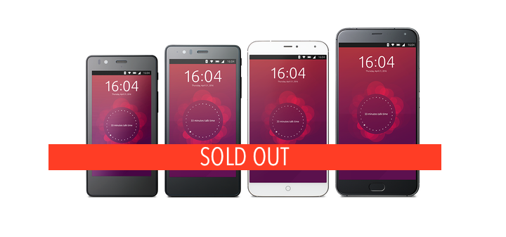

Before you dive in to read this post I need you to do me a favour: go to your kitchen, open the condiments cupboard, and grab some salt.
{kind=link}
Why? Because the veracity of what follows needs to be taken with a very large pinch of sodium chloride.
Here’s the situation: both the Bq Aquaris E4.5 and E5 Ubuntu Phones are sold out and no longer available to buy from the Bq website. Even the Meizu PRO 5, the most recent Ubuntu Phone to be released, is incredibly hard to get hold of.
Although the Bq M10 Ubuntu Edition tablet is still in stock anyone wanting an Ubuntu smartphone currently has to look to the second-hand market, or buy an Android phone and manually flash a supported Ubuntu Touch image to it.
Buyers Turn to Twitter
With stock levels running this low — which you can read as a good sign or a bad one —it’s no surprise to see Twitter users tweeting the company with questions and enquiries.
Among them is ‘Hauptquartier‘, who tweeted the Spanish tech company to learn if the £260 8-core Aquaris X5 Plus would be receiving the Ubuntu treatment:
@docjuhnk it won't be available as #Ubuntu edition
— BQ (@bqreaders) August 2, 2016
This is hardly a great surprise. The Aquaris X5 Plus uses a powerful 8-core Qualcomm Snapdragon 625 chipset to which Ubuntu has not (yet) been ported.
But might Bq have other devices primed for release instead?
@docjuhnk we don't have any plans, sorry
— BQ (@bqreaders) August 2, 2016
Yikes — not encouraging is it?
But don’t panic.
Does This Mean Bq Isn’t Making Any More Ubuntu Phones?
No.
‘Put simply: plans can change’
The people who handle Bq’s social media may, quite simply, be unaware of any plans in the pipeline, or it could be too early to confirm anything definite. With no direct signs of a new Bq device in the usual Ubuntu development places, if Bq is planning a new device it may still be in early days of planning and thus unlikely to be on the marketing roadmap.
It’s also worth keeping in mind that new product announcements don’t tend to be revealed in such a low-key manner. Niche products like the Ubuntu Phone tend to warrant a bit of fanfare and spotlighting.
So while this tweet can be taken at face value, it’s worth keeping in mind the caveats.
When Will We See New Ubuntu Phones?
The first Ubuntu Phone, the Bq Aquaris E4.5 sold well enough for a follow-up device to be released. You may remember reports about Bq working on a convergent Ubuntu Phone.
This was the plan, however this was changed from a convergent phone to a convergent tablet during development. The resulting device, the Bq Aquaris M10 tablet, was born and has sold over 4,000 units since going on sale earlier this year.
A new 10-core Ubuntu Phone from Meizu is on the way so if you have been holding out for a device you shouldn’t have to wait much longer. You’ll be able to drop some dosh on a device pre-installed with Ubuntu very shortly.
Thanks to R